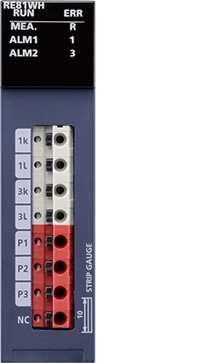
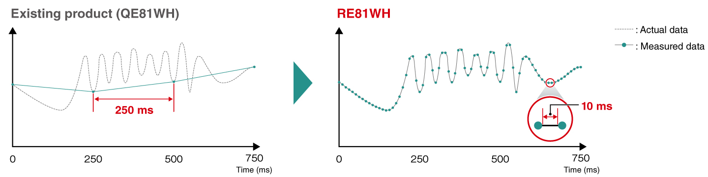
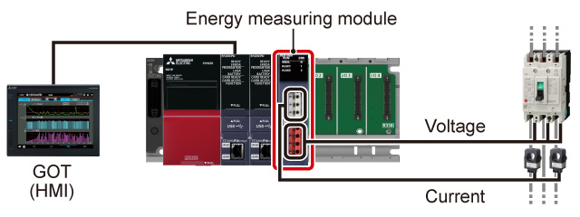

Controllers MELSEC iQ-R Series Fitur Produk -Pengukuran energi-

Energy measuring module
Modul pengukuran energi dapat memproses data terukur pada siklus penyegaran 10 ms dan ideal untuk penghematan energi dan pemeliharaan prediktif di lokasi produksi.

Fitur<sup>Pengukuran energi yang sangat terperinci dengan pengaturan dan pemasangan yang sederhana</sup>
- Pemasangan dan pengaturan yang mudah
- Pengukuran yang sangat terperinci
- Dengan memasang modul secara langsung pada slot kosong unit dasar, fungsi pengukuran dapat ditambahkan tanpa mengubah tata letak di panel kontrol
- Penyiapan mudah dilakukan dengan perangkat lunak rekayasa GX Works3 tanpa harus mengembangkan program
- Pengukuran energi yang sangat rinci pada siklus penyegaran 10 ms, yang ideal untuk peralatan manufaktur untuk industri minuman dan semikonduktor

Visualisasikan emisi CO2 dan data lainnya dalam koordinasi dengan paket awal e-F@ctory
- Manajemen emisi CO2
- Visualisasi
- Emisi CO2, konsumsi energi spesifik, volume produksi, dan energi listrik dapat dengan mudah diperiksa dengan contoh proyek gratis pengontrol terprogram dan GOT (HMI)
- Emisi CO2 ditampilkan pada GOT (HMI) yang memungkinkan pemantauan waktu nyata di lantai pabrik. Ini akan membantu meningkatkan kesadaran akan pengurangan emisi CO2 dalam manufaktur
- Data energi listrik dan volume produksi disimpan untuk analisis kehilangan energi per lini produksi dan proses peralatan

Spesifikasi<sup>Spesifikasi modul pengukuran energi</sup>
| Item | RE81WH |
|---|---|
| Number of measurable circuits | 1 |
| Phase-wire systems | Single-phase 2-wire, single-phase 3-wire, three-phase 3-wire common |
| Current circuit (A AC) | 5, 50, 100, 250, 400, 600*1 5*2 |
| Voltage circuit | |
| Single-phase 2-wire, three-phase 3-wire (V AC) | 110, 220 common*3 |
| Single-phase 3-wire (V AC) | 110 (1-2 lines, 2-3 lines), 220 (1-3 lines) |
| Measurement specifications | |
| Data refreshing cycle (ms) | 10…10000*4 |
| Measurement items | Current, current demand, voltage, electric power, electric power demand, reactive power, apparent power, harmonic current, harmonic voltage, frequency, power factor, electric energy, reactive energy |
- *1.Nilai saat sensor arus tipe split khusus digunakan. Setiap nilai menunjukkan nilai arus utama sensor arus.
- *2.Nilai saat sensor arus 5 A khusus digunakan. Sensor arus 5 A digunakan dengan konfigurasi dua tahap yang dikombinasikan dengan transformator arus (CT). Nilai arus primer dapat diatur hingga 6000 A.
- *3.Hingga 6600 V dapat diatur dalam kombinasi dengan transformator tegangan (VT).
- *4.Dapat diatur dalam kelipatan 10 ms.